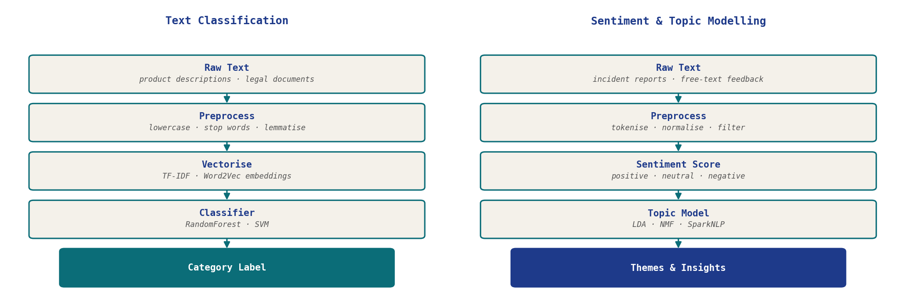

Two engagements applying text classification, sentiment analysis, and topic modelling to domain-specific text: product taxonomy harmonisation for a global consumer goods company, and safety theme extraction from incident reports for an energy utility.

One of the world's largest consumer goods companies managed a $34B spend portfolio across multiple ERP systems with no shared taxonomy for products, spend categories, or suppliers. Consolidating the data required weeks of manual work; even modest automation would translate to material savings.
An end-to-end solution was designed and built on Azure Databricks: metadata-driven ingestion pipelines, a RandomForest text classifier to harmonise product categories across systems, and spend dashboards. MLflow tracked experiments and model versions; a CI/CD framework managed deployment across teams. The solution accelerated the client's data foundation roadmap by approximately one year.
A large US energy utility needed to extract safety-related themes from incident reports to support policy decisions by its executive safety committee. The volume and variety of reports made manual review impractical.
NLP pipelines were built on Azure Databricks using sentiment analysis and topic modelling to surface recurring themes and patterns across incident data. The output fed into automated weekly reports and refreshed dashboards delivered directly to the safety committee, enabling the team to identify trends, refine policies, and track the effect of interventions on incident frequency and severity.
Related writing: topic modelling algorithms and SparkNLP for topic modelling on Medium; code on GitHub.